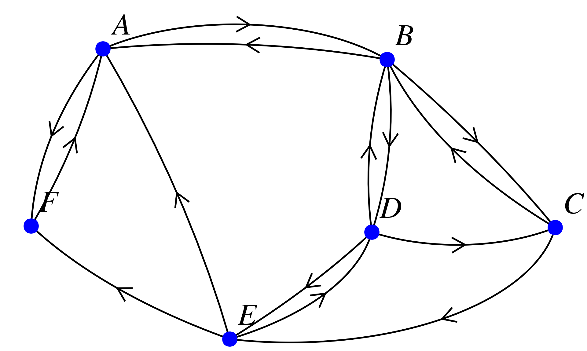

Graphes
Des listes chaînées aux piles, files puis arbres, les structures de données sont de plus en plus complexes. Ce cheminement nous mène maintenant aux graphes, une structure de données dite relationnelle car elle permet de modéliser des liens entre des entités.
Notion de graphe
Un graphe est un ensemble de sommets combiné à un ensemble d’arêtes liant ces sommets. Il existe beaucoup de variantes, par exemple les graphes orientés où les arêtes ont un sens unique de parcours ou bien les graphes pondérés où les arêtes sont dotées d'un poids.
Exemples :
-
Graphe simple non orienté et non pondéré où les sommets sont nommés par des nombres entiers :

-
Graphe simple non orienté et non pondéré où les sommets sont nommés par des lettres :
-
Graphe orienté et non pondéré :
 -
Graphe simple non orienté pondéré :

-
Graphe simple orienté et pondéré :

Problèmes faisant intervenir des graphes.
Les sept ponts de Königsberg
L'origine des graphes viendrait du mathématicien suisse Leonhard Euler, lors de la résolution du problème des sept ponts de Königsberg. Le problème s’énonce ainsi :
« Existe-t-il un itinéraire permettant de traverser une et une seule fois les 7 ponts de la ville de Königsberg dont voici une représentation.»
La résolution de ce problème est facilité par l'utilisation du graphe suivant :
 Et la démonstration est la suivante :
Et la démonstration est la suivante :
Imaginons qu'il existe un tel parcours.
Pour chaque sommet autre que le premier et le dernier de parcours, il faut que l'on puisse en partir autant de fois qu'on est arrivé à ce sommet.
Donc le nombre de sommets ayant un nombre impair d’arêtes ne peux pas dépasser 2.
Sur ce graphe, tous les sommets ont un nombre impair d'arêtes.
Il n'existe donc pas de promenade parcourant ces ponts une et une seule fois.

Coloration des sommets d'un graphe
Le théorème des 4 couleurs affirme que pour n'importe quelle carte, il existe une façon de colorier chaque région avec 4 couleurs sans qu'aucunes régions adjacentes ne soit de la même couleur. Voilà une solution pour la carte présentant les états des USA :
 La démonstration de ce théorème est très compliquée et fait intervenir plusieurs centaines de situations possibles.
Il s'agît de la première preuve réalisée par un ordinateur (en 1976 après 1200 heures de calcul).
La démonstration de ce théorème est très compliquée et fait intervenir plusieurs centaines de situations possibles.
Il s'agît de la première preuve réalisée par un ordinateur (en 1976 après 1200 heures de calcul).
Elle s'appuie sur un graphe ou les sommets sont les régions de la carte et où les arêtes relient les régions adjacentes.
Le problème de coloration consiste à déterminer le nombre de couleurs nécessaire (au minimum) pour colorier les sommets d'un graphe sans que deux sommets reliés par une arrête ne soient de la même couleur.
Le problème de coloration permet de résoudre de nombreux problèmes comme par exemple des problèmes d'optimisation.
Déterminer le nombre minimum de camions nécessaires.
- Combien peut-on programmer d'épreuves d'option au maximum dans une journée ?
- Quelle est la durée minimum de l'ensemble des épreuves optionnelles ?
Un problème bidon
Dans le film Une journée en enfer, Les deux héros doivent résoudre un problème de logique afin de désamorcer une bombe. Ils disposent d'une fontaine d'eau et de 2 bidons, l'un d'une capacité de 5 gallons et l'autre d'une capacité de 3 gallons. Ils doivent remplir l'un des bidons d'eau par exactement 4 gallons d'eau.
Ce problème peut facilement être résolu à l'aide d'un graphe orienté : Les sommets seront étiquetés de la forme (a, b) où a est le volume d'eau (en gallons) dans le gros bidon et b le volume d'eau dans le petit gallon. La situation initiale est (0, 0) et on souhaite obtenir une situation de la forme (4, x). Les arrêtes signifient qu'il est possible de passer d'une situation à l'autre en réalisant une des actions suivantes :
- vider au sol le contenu du gros bidon
- vider au sol le contenu du petit bidon
- remplir au maximum le gros bidon à l'aide de la fontaine
- remplir au maximum le petit bidon à l'aide de la fontaine
- transvaser l'eau du petit bidon vers le gros bidon jusqu'à vider le petit bidon ou remplir le gros
- transvaser l'eau du gros bidon vers le petit bidon jusqu'à vider le gros bidon ou remplir le petit
- Construire le graphe permettant de résoudre ce problème
- En déduire les actions à mener pour résoudre ce problème
Distances dans un graphe
Dans un graphe non pondéré
La longueur d'un chemin dans un graphe non pondéré est égal au nombre d’arêtes traversées en parcourant ce chemin.
La distance entre deux sommets et égal à la plus petite longueur parmi tous les chemins reliant ces deux sommets.
Si deux sommets ne sont pas reliables, alors leur distance est √©gale √† +∞.
- Quelle est la distance séparant les sommets A et G ?
- Quelle est la distance séparant les sommets A et H ?
- Quelle est la distance séparant les sommets E et D ?
Attention, dans un graphe orienté, il n'est possible de parcourir les arêtes que dans un seul sens. La distance d'un sommet A vers un sommet B peut alors être différente de la distance du sommet B vers le sommet A !
- Quelle est la distance du sommet F vers le sommet D ?
- Quelle est la distance du sommet D vers le sommet F ?
- Quelle est la distance du sommet A vers le sommet E ?
Dans un graphe pondéré
La longueur d'un chemin dans un graphe pondéré est égal à la somme des poids de toutes les d’arêtes traversées en parcourant ce chemin.
La distance entre deux sommets et égal à la plus petite longueur parmi tous les chemins reliant ces deux sommets.
Si deux sommets ne sont pas reliables, alors leur distance est √©gale √† +∞.
- Quelle est la distance séparant les sommets A et E ?
- Quelle est la distance séparant les sommets A et F ?
- Quelle est la distance séparant les sommets C et F ?
Attention, dans un graphe orienté, il n'est possible de parcourir les arêtes que dans un seul sens. La distance d'un sommet A vers un sommet B peut alors être différente de la distance du sommet B vers le sommet A !
- Quelle est la distance du sommet 1 vers le sommet 4 ?
- Quelle est la distance du sommet 1 vers le sommet 8 ?
- Quelle est la distance du sommet 2 vers le sommet 5 ?
- Quelle est la distance du sommet 5 vers le sommet 2 ?
Parcours d'un graphe
Tout comme les arbres, les graphes peuvent être parcouru en utilisant les sommets voisins d'un sommets de départ. Il y a 3 parcours possibles :
- en largeur
- en profondeur préfixe
- en profondeur postfixe
Parcours en largeur
Il s'agît de parcourir en premier tous les voisins puis ensuite les voisins des voisins qui n'ont pas été traités en s'éloignant ainsi progressivement du sommet initial. Une file permet de réaliser facilement ce parcours. Exemple :
On considère le graphe :
- Le parcours en largeur au départ du sommet 1 donne : 1 - 2 - 5 - 3 - 4 - 6
- Le parcours en largeur au départ du sommet 3 donne : 3 - 2 - 4 - 1 - 5 - 6
- Donner l'ordre des sommets obtenu par un parcours en largeur au départ de A.
- Donner l'ordre des sommets obtenu par un parcours en largeur au départ de E.
- Donner l'ordre des sommets obtenu par un parcours en largeur au départ de A.
- Donner l'ordre des sommets obtenu par un parcours en largeur au départ de E.
Remarque : il arrive que tous les sommets d'un graphe ne soit pas atteignable lorsque l'on effectue un parcours de ce graphe en largeur (ou en profondeur).
- Donner l'ordre des sommets obtenu par un parcours en largeur au départ de 1.
- Donner l'ordre des sommets obtenu par un parcours en largeur au départ de 4.
Parcours en profondeur préfixe
Il s'agît de parcourir un sommet avant de parcourir tous ses voisins qui n'ont pas été traités.
Une pile ou une récurrence permet de réaliser facilement ce parcours. Exemple :
On considère le graphe :
- Le parcours en profondeur préfixe au départ du sommet 1 donne : 1 - 2 - 3 - 4 - 5 - 6
- Le parcours en profondeur préfixe au départ du sommet 3 donne : 3 - 2 - 1 - 5 - 4 - 6
- Donner l'ordre des sommets obtenu par un parcours en largeur au départ de A.
- Donner l'ordre des sommets obtenu par un parcours en largeur au départ de E.
- Donner l'ordre des sommets obtenu par un parcours en largeur au départ de A.
- Donner l'ordre des sommets obtenu par un parcours en largeur au départ de E.
Parcours en profondeur postfixe
Il s'agît de parcourir un sommet après avoir parcouru tous ses voisins qui n'ont pas été traités.
Une pile ou une récurrence permet de réaliser facilement ce parcours. Exemple :
On considère le graphe :
- Le parcours en profondeur postfixe au départ du sommet 1 donne : 5 - 6 - 4 - 3 - 2 - 1
- Le parcours en profondeur postfixe au départ du sommet 3 donne : 6 - 4 - 5 - 1 - 2 - 3
- Donner l'ordre des sommets postfixe par un parcours en largeur au départ de A.
- Donner l'ordre des sommets postfixe par un parcours en largeur au départ de E.
- Donner l'ordre des sommets postfixe par un parcours en largeur au départ de A.
- Donner l'ordre des sommets postfixe par un parcours en largeur au départ de E.
Implémentations
Il y a plusieurs façons d'enregistrer les données qui représente le graphe. Le choix de l'implémentation aura un impact direct sur la complexité en mémoire (volume des données stockées) ou en complexité temporel (nombre d'instruction nécessaire pour les parcours par exemple). Dans tous les cas, nous partirons d'une classe Sommet qui permet éventuellement d'ajouter deux sommets ayant le même nom au graphe. Voilà le code de cette classe :
class Sommet :
def __init__(self, nom) :
self.nom = nom
def __str__(self) :
return str(self.nom)
Grâce à une liste de sommets et une liste d’arêtes
La méthode la plus proche de la définition d'un graphe : on utilise la liste des sommets et la liste des arêtes.
-
Créer une classe graphe possédant deux attributs :
- sommets : une liste qui contiendra les sommets (objets de classe Sommet) de ce graphe
- aretes : une liste qui contiendra les arêtes de ce graphe (tuples de 2 éléments : le départ de l’arête et l'arrivée.)
- Ajouter une méthode ajouter_sommet qui permet d'ajouter un sommet au graphe.
- Ajouter une méthode ajouter_arete qui permet d'ajouter une arête au graphe en donnant les deux sommets concernés.
- Ajouter une méthode afficher qui affiche le noms de chaque sommet et toutes les arêtes.
- Ajouter une méthode retirer_arete qui permet de retirer une des arêtes du graphe.
- Ajouter une méthode retirer_sommet qui permet de retirer un sommet du graphe ainsi que toutes les arêtes concernées.
- Ajouter une méthode liste_sommets qui retourne la liste des sommets du graphe.
- Ajouter une méthode liste_successeurs qui retourne la liste des sommets du graphe directement atteignable d'un sommet initial donné en paramètre.
- Ajouter une méthode liste_predecesseurs qui retourne la liste des sommets du graphe à partir duquel un sommet initial donné en paramètre est directement atteignable.
- Ajouter une méthode existe_arete qui retourne un booleen indiquant s'il est directement possible d'aller d'un sommet de départ à un autre. Ces deux sommets étant donnés en paramètre.
Grâce à la matrice d'adjacence
Les présence ou l'absence d'une arête est stockée dans un tableau à double entrée aussi appelé matrice. Ce tableau a autant de ligne et de colonne que de sommets dans le graphe. matrice Nous utiliserons un 0 pour l'absence d'arête et un 1 pour la présence d'une arête reliant le sommet associé à la ligne au sommet associé à la colonne.
-
Créer une classe graphe possédant deux attributs :
- sommets : une liste qui contiendra les sommets (objets de classe Sommet) de ce graphe
- matrice : une liste de liste contenant des 0 et des 1.
- Ajouter une méthode ajouter_sommet qui permet d'ajouter un sommet au graphe.
- Ajouter une méthode ajouter_arete qui permet d'ajouter une arête au graphe en donnant les deux sommets concernés.
- Ajouter une méthode afficher qui affiche le noms de chaque sommet et la matrice d'adjacence.
- Ajouter une méthode retirer_arete qui permet de retirer une des arêtes du graphe.
- Ajouter une méthode retirer_sommet qui permet de retirer un sommet du graphe ainsi que toutes les arêtes concernées.
- Ajouter une méthode liste_sommets qui retourne la liste des sommets du graphe.
- Ajouter une méthode liste_successeurs qui retourne la liste des sommets du graphe directement atteignable d'un sommet initial donné en paramètre.
- Ajouter une méthode liste_predecesseurs qui retourne la liste des sommets du graphe à partir duquel un sommet initial donné en paramètre est directement atteignable.
- Ajouter une méthode existe_arete qui retourne un booleen indiquant s'il est directement possible d'aller d'un sommet de départ à un autre. Ces deux sommets étant donnés en paramètre.